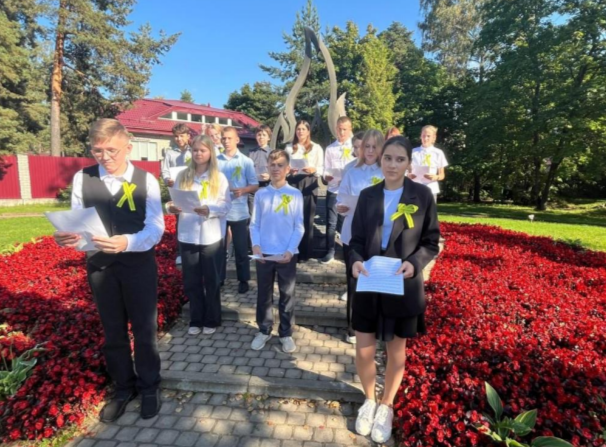
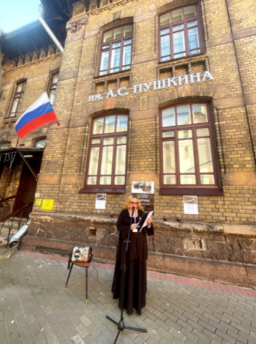
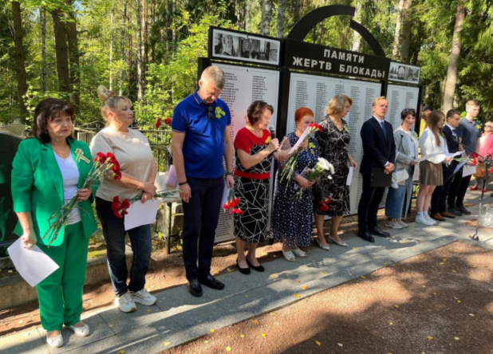

ФОНД СОХРАНЕНИЯ И РАЗВИТИЯ КУЛЬТУРЫ, КРАЕВЕДЕНИЯ И ТУРИЗМА «ЛЕНИНГРАДЦЫ»
Общегородская общероссийская акция Дня памяти жертв блокады проходит уже 6 лет и включена в календарь культурных мероприятий Санкт-Петербурга.
Задача акции Дня памяти – прочесть все известные имена погибших в блокаду в ходе поминальных блокадных чтений, которые проходят на различных площадках от Главного двора Зимнего дворца до районных библиотек и школ. Чтобы все имена были названы, чтобы горожане ежегодно отдавали дань памяти погибшим, чтобы мы умели отделять праздник от скорби. В акции может принять участие любой: можно выбрать одну из площадок и прийти прочесть имена своих ушедших близких или имена из подготовленных списков погибших, можно прислать имена погибших организаторам акции, и они будут зачитаны в День памяти. Также акция проходит в сети Интернет в соцсети ВКонтакте – люди присылают фотографии мирного неба и обмениваются «Свечами памяти», публикуют имена и истории своих погибших в блокаду родственников, присылают имена погибших организаторам, которые мы зачитываем в ходе акции. Таким образом акция обретает общероссийский масштаб. Все названные имена собираются в отдельную книгу «Названные имена». Существующие списки имен погибших дополняются. Акция рассчитана на разные социальные и возрастные группы, однако самая главная ее целевая аудитория – именно молодежь, поскольку именно они должны сохранить историческую память и передать ее следующим поколениям. Поэтому в акции активно участвуют ученики старших классов школ и студенты. Также возрастная группа пользователей соцсети Вконтакте, где акция проходит онлайн, в основном от 14 до 35 лет.
  Количество благополучателей: 30 человек.
Количество волонтеров: 30 человек.